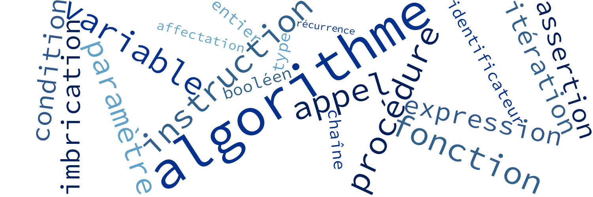
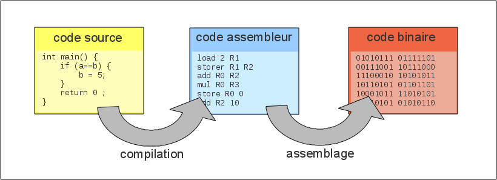

Bienvenue !
Pierre-Julien VILLOUD

Introduction
Algorithme : C'est une suite d'actions (ou instructions) qu'un ordinateur doit effectuer pour obtenir en un temps fini un résultat déterminé (ou sortie), à partir d'une situation donnée (ou entrée).

Langages de programmation
Au tout début de l'informatique, les programmes étaient développés en langage machine, c'est-à-dire des 0 et des 1 qui étaient directement interpretables et exécutables par le processeur de l'ordinateur. Cela a évidemment été très vite compliqué. Un premier langage de bas niveau est apparu, le langage assembleur, un langage très proche du langage machine mais lisible par un être humain.

Les langages utilisés maintenant sont dits de haut niveau. Ces langages sont transformés ou compilés en langage assembleur puis assemblés en langage machine pour pouvoir être exécutés par le processeur.
Compilation
Pour passer d'un code source en langage de haut niveau à un code en langage assembleur, on passe par ce que l'on appelle un compilateur. Il effectue les actions suivantes sur le code source :
- Analyse lexicale : Cela permet d'isoler chaque mot et de le qualifier (est-ce un mot réservé du langage, est-ce une valeur, un identificateur ?).
- Analyse syntaxique : Cela permet de vérifier que l'enchainement des mots est valide par rapport à la grammaire du langage.
- Analyse sémantique : Cela permet de vérifier que les types des variables sont respectés ou qu'elles ont été bien déclarées par exemple.
En cas de problème à l'une des étapes ci-dessus, la compilation génère des erreurs et le programme ne peut être exécuté. Nous allons utiliser dans ce cours un pseudo-langage permettant de comprendre les concepts de l'algorithmique.
Les chaînes de caractères
Il est fréquent que l'utilisateur d'un programme et l'ordinateur intéragissent en échangeant des messages textuels. Nous allons donc introduire deux instructions permettant l'affichage par l'ordinateur et la saisie par l'utilisateur de messages sous formes de chaînes de caractères.
Affichage
affiche('Hello World !');Saisie
lit(nom);affiche('Quel est votre nom ?');
lit(nom);
affiche('Bonjour ' + nom + ' !');
Les chaînes de caractères peuvent être composées de n'importe quels caractères (lettres, majuscules, minuscules, chiffres, caractères accentués, caractères spéciaux...).
Variables et types
Comme nous l'avons vu, nous pouvons utiliser des variables pour stocker des valeurs (dans le cas précédent, une chaîne de caractères). On peut considérer que l'ordinateur contient un certain nombre de cases, ou emplacements mémoires permettant d'accueillir et de stocker ces fameuses variables. Pour pouvoir utiliser cette variable dans une autre instruction, on l'identifie par une étiquette ou identificateur permettant d'y faire référence. Un identificateur est donc une suite de caractères alphanumériques (mais commençant forcément par une lettre).
affiche('Quel est votre nom ?');
lit(nom);
affiche('Bonjour ' + nom + ' !');
affiche('Rappelez-moi votre nom ?');
lit(nom);
affiche('OK ! Bonjour ' + nom + ' !');
affiche('Bonjour ' + 'nom' + ' !');
On peut ensuite utiliser ou manipuler ces variables en faisant référence à leurs identificateurs respectifs.
Déclarations de variables
Pour pouvoir être utilisée, une variable doit être déclarée une seule fois avant d'y faire référence pour la première fois. Dans une déclaration, on précise le type de la variable ainsi que l'identificateur qui sera utilisé pour y faire référence. La plupart des langages sont sensibles à la casse. Ainsi une variable d'identificateur
nom est distincte de Nom ou de NOM.
nom : chaîne;
affiche('Quel est votre nom ?');
lit(nom);
affiche('Bonjour ' + nom + ' !');
On parle ici de langage fortement typé (Java, C++...), c'est-à-dire qu'on ne peut stocker qu'un seul type de valeur dans une variable. Il existe aussi des langages faiblement typés où l'on peut stocker n'importe quel type dans une variable (Javascript, PHP...). Dans ce cas, on ne spécifie pas le type.
Initialisation et affectation de variables
Une fois déclarée, la variable est indéfinie puisqu'elle n'a pas encore de valeur. Elle doit donc être initialisée, c'est-à-dire qu'on doit lui donner une valeur avant de pouvoir la référencer quelque part. Par la suite, on peut lui affecter d'autres valeurs au fur et à mesure de l'algorithme.
msg : chaîne;
ch : chaîne;
msg := 'Bonjour ';
affiche('Quel est votre prénom ?');
lit(ch);
msg := msg + ch + ' ';
affiche('Quel est votre nom ?');
lit(ch);
msg := msg + ch + ' !';
affiche(msg);Type entier
Nous avons vu que nous pouvions stocker des chaînes de caractères dans des variables. Que se passe-t-il si l'on souhaite effectuer des opérations arithmétiques (additions ou multiplications par exemple) avec des nombres entiers ? Une chaîne de caractères ne peut être utilisée pour effectuer ces opérations puisqu'elle peut contenir n'importe quel caractère. On utilise le type entier.
nombre : entier;
affiche('Nombre entre 1 et 10');
lit(nombre);
affiche('Carré : ' + nombre*nombre);
Les autres opérateurs arithmétiques peuvent être utilisés :
+ / * et combinés. Les règles de priorité sur les opérateurs sont celles des mathématiques.
Type réel
Ajouter, soustraire et multiplier des entiers fonctionne bien. Qu'en est-il de la division de deux entiers ? Cela ne produit pas systématiquement un entier. On doit alors utiliser le type réel.
nbEntier, deux, cinq, dix : entier;
nbReelFini, nbReelNonFini : réel;
dix := 10;
cinq := 5;
deux := 10 / 5;=>
nbEntier := cinq / deux;=> 2
nbReelFini := cinq / deux;=> 2.0
nbReelFini := cinq / nbReelFini;=> 2.5
nbReelNonFini := 2 / 3;=>
Généralement dans les langages de programmation typés, la division de deux entiers produit un entier. Il faut que l'un de deux opérandes soit un réel pour produire un réel. A noter que lorsque le résultat n'est pas fini, ce dernier est arrondi.
Type structuré
Avant de parler de programmation objet dans un prochain cours, une première étape consiste à utiliser un type structuré permettant de représenter des données composées.
type personne = structure
nom : chaîne;
prenom : chaîne;
âge : entier;
fin;
p : personne;
p.nom := 'Pierre-Julien';
p.prenom := 'Villoud';
p.âge := 32;
Cela permet de représenter des données plus complexes.
Exercice
Ecrire un algorithme permettant à un utilisateur de calculer son âge en lui demandant son année de naissance et l'année en cours (on ne tient pas compte des jours et des mois).
Comment faire maintenant si l'on souhaite calculer également l'âge de tous ses enfants ? Comment gérer le cas où l'utilisateur renseigne une année de naissance supérieure à l'année en cours ?
Conditions et itérations
Lorsqu'on écrit un algorithme, nous avons rapidement besoin de pouvoir effectuer des portions d'algorithmes plusieurs fois, ou d'exécuter une portion d'algorithme uniquement dans tel ou tel cas. Pour cela, on doit d'abord définir comment isoler un ensemble d'instructions pour former un bloc.
Condition
nombre : entier;
affiche('Pair ou impair ? Entre un nombre : ');
lit(nombre);
affiche(nombre + ' est pair !'); affiche(nombre + ' est impair !');Itération
x, y, resultat : entier;
affiche('On souhaite calculer x ^ y. Entrer x : ');
lit(x);
affiche('Entrer y');
lit(y);
resultat := 1;
resultat := resultat * x;
affiche(x + ' ^ ' + y + ' = ' + resultat);
On prendra l'habitude d'indenter, c'est-à-dire de décaler par plusieurs espaces ou une tabulation (il faut cependant garder toujours le même espacement pour des raisons de lisibilité) les instructions contenues dans le bloc. Voyons maintenant comment écrire ces itérations et conditions.
Conditions
Pour pouvoir exécuter un bloc de code en fonction d'une condition, nous devons déjà définir la notion d'expression booléenne ou d'instruction conditionnelle. Cela représente une instruction qui renvoie
vrai ou faux. On introduit donc par la même occasion un nouveau type, le type booléen qui ne peut prendre que ses deux valeurs.
si condition alors
instructions...
finsi
si condition alors
instructions...
sinon
instructions...
finsi
si condition alors
instructions...
sinon si condition alors
instructions...
sinon
instructions...
finsisi x = 0 alors
affiche('x est nul !');
finsi
si x < 0 alors
affiche('x est négatif !');
sinon
affiche('x est positif ou nul !');
finsi
si x < 0 alors
affiche('x est négatif !');
sinon si x > 0 alors
affiche('x est positif !');
sinon
affiche('x est nul !');
finsi
A noter que
si, alors, sinon et finsi sont désormais des mots réservés. Ils ne peuvent être utilisés en tant qu'identificateur pour des variables. On peut également imbriquer d'autres si ... finsi à l'intérieur des instructions permettant de modéliser des cas plus complexes.
Expressions booléennes (1/2)
Nous avons vu des expressions booléennes simples. Dans la réalité, les conditions sont souvent plus complexes et combinées. Voyons quelques exemples. Soit
A et B des expressions booléennes simples (comme x = 0 par exemple).
Négation
La négation permet d'inverser la condition.
non A
non x = 0
équivalent à x ≠ 0 ou x != 0| A | non A |
|---|---|
| vrai | faux |
| faux | vrai |
Intersection
Le résultat d'une intersection est vrai lorsque les deux opérandes sont vrais.
A et B
x > 0 et x ≤ 4 (ou x <= 4)
est vrai si x est compris entre 1 et 4,
faux sinon| A | B | A et B |
|---|---|---|
| vrai | vrai | vrai |
| vrai | faux | faux |
| faux | vrai | faux |
| faux | faux | faux |
A noter que dans le cas d'une intersection et dans la plupart des langages de programmation, si le premier opérande est faux, le deuxième n'est même pas évalué.
Expressions booléennes (2/2)
Nous avons vu des expressions booléennes simples. Dans la réalité, les conditions sont souvent plus complexes et combinées. Voyons quelques exemples. Soit
A et B des expressions booléennes simples (comme x = 0 par exemple).
Union
L'union permet de s'assurer qu'au moins un des deux opérandes est vrai.
A ou B
autorisationParentale : booléen;
age >= 18 ou autorisationParentale
| A | B | A ou B |
|---|---|---|
| vrai | vrai | vrai |
| vrai | faux | vrai |
| faux | vrai | vrai |
| faux | faux | faux |
Union exclusive
L'union exclusive permet de s'assurer qu'un et un seul des deux opérandes est vrai.
A xou B
fromage, dessert : booléen;
fromage xou dessert| A | B | A xou B |
|---|---|---|
| vrai | vrai | faux |
| vrai | faux | vrai |
| faux | vrai | vrai |
| faux | faux | faux |
A noter que dans le cas d'une union classique, si le premier opérande est vrai, le deuxième n'est même pas évalué.
Itérations
Afin d'éviter de dupliquer un bloc de code, ou lorsqu'on ne sait pas à l'avance combien de fois on veut l'exécuter, on utilise les itérations (ou boucles). Une itération exécute un bloc de code tant qu'une condition est vérifiée. Dès que la condition est fausse, l'itération se termine et la suite du programme s'exécute.
tantque condition faire
instructions
finfaire;resultat, x, y, i : entier;
affiche('On souhaite calculer x ^ y. Entrer x : ');
lit(x);
affiche('Entrer y');
lit(y);
resultat := 1;
i := 1;
tantque i <= y faire
resultat := resultat * x;
affiche('Calcul... ' + x + ' ^ ' i + ' = ' + resultat);
i := i + 1;
finfaire;
affiche(x + ' ^ ' y + ' = ' + resultat);
Pour éviter les boucles infinies, il faut bien faire attention à la condition. Généralement les variables sur lesquelles porte la condition doivent être mises à jour dans le bloc de l'itération pour qu'il y ait sortie de boucle à un moment donné.
Exercice
Ecrire maintenant l'algorithme permettant de demander le nom et l'année de naissance de l'utilisateur. Calculer son age, puis lui demander combien d'enfant il a. Pour chaque enfant, demander son nom et calculer son âge.
Il y a encore une duplication au niveau du calcul de l'âge de l'utilisateur et de ses enfants. Comment l'éviter ?
Procédures et fonctions
Pour éviter de recopier des portions entières d'algorithmes lorsqu'on en a besoin plusieurs fois à des endroits différents, on peut regrouper ces instructions en une procédure ou une fonction qui sera nommée. Il suffira ensuite d'utiliser le nom de la procédure ou fonction pour exécuter les instructions.
Procédure
Une procédure est simplement un regroupement d'instructions.
procédure bonjour
debproc
affiche('Quel est votre nom ?');
lit(nom);
affiche('Bonjour ' + nom + ' !');
finproc;
...
bonjour;Fonction
Une fonction est un regroupement d'instructions mais qui renvoie un résultat qui peut être stocké dans une variable ou utilisé directement dans une instruction.
fonction majeur(âge : entier) : booléen
debfonc
si âge < 18 alors
retour faux;
sinon
retour vrai;
finsi;
finfonc;
...
estmajeur := majeur(25);vrai
si majeur(12) alors...fauxaffiche() est une procédure
lit(var) est une fonction puisqu'elle renvoie une chaîne de caractère.
Dans le cas d'une fonction, il est obligatoire de renvoyer systématiquement une valeur du bon type. Il ne doit pas y avoir de branche qui ne fait pas de retour.
Paramètres
Il est intéressant de développer des procédures et des fonctions dynamiques, c'est-à-dire qui peuvent être utilisées avec des données différentes. Pour cela, on peut utiliser des paramètres dans nos fonctions et procédures.
fonction saisieNombre() : entier
nombre : entier;
debfonc
affiche('Entrer un nombre !');
lit(nombre);
retour nombre;
finfonc;
procédure calculPuissance(message : chaîne)
x, y : entier;
debproc
affiche(message);
x = saisieNombre();
y = saisieNombre();
affiche(x + ' ^ ' + y + ' = ' + puissance(x,y));
finproc;fonction puissance(a : entier, b : entier) : entier
resultat, i : entier;
debfonc
resultat := 1;
i := 1;
tantque i <= b faire
resultat := resultat * a;
i := i + 1;
finfaire;
retour resultat;
finfonc;
calculPuissance('Calcul de x ^ y : ');
Les paramètres sont des variables particulières puisqu'elles n'ont de valeur que lors de l'appel de la procédure ou la fonction. Il n'y a pas d'affectation explicite.
Exercice
Ecrire le même algorithme que dans l'exercice précédent mais en introduisant des procédures et des fonctions pour rendre le code aussi propre et concis que possible, sans duplication.
Les vecteurs
Il est fréquent de vouloir représenter un ensemble de variables d'un même type dans un algorithme. On veut pouvoir généralement parcourir une à une ces variables pour effectuer un traitement dessus, ou accéder à une variable en particulier (la nème par exemple). Un vecteur (ou tableau) permet de stocker un nombre illimité de variables d'un même type.
- Liste de présence => Vecteur de chaînes de caractère
- Les employés d'une entreprise => Vecteur d'un type structuré
employe - Les livres d'une bibliothèque => Vecteur d'un type structuré
livre - ...
Une chaîne de caractère peut être considérée comme un tableau de caractères, c'est d'ailleurs de cette manière qu'elle est souvent représentée en programmation (comme en C avec
char[]). Le type chaîne introduit jusqu'ici peut donc être utilisé de la même manière qu'un vecteur.
Représentation graphique
Un vecteur peut être représenté des manières suivantes :
- Appolinaire Guillaume
- Aragon Louis
- ...
- Eluard Paul
|
|
... |
|
Bien que les types structurés soient le plus souvent utilisés, nous prendrons des exemples avec des types simples pour commencer.
Vocabulaire
Voici les différents éléments de vocabulaire lorsqu'on parle de vecteurs
- Ensemble des éléments : Cela correspond à l'ensemble des cases du vecteur.
- Taille : Cela correspond au nombre d'éléments du vecteur.
- Ensemble des indices : Cela correspond à l'ensemble des numéros des cases du vecteur (parfois de 1 à taille, mais généralement de 0 à taille - 1). L'indice le plus petit est appelé borne inférieure, le plus grand borne supérieure.
- Parcours : Lorsqu'on effectue un traitement sur chaque élément d'un vecteur, du premier au dernier.
- Accès direct : Lorsqu'on veut obtenir la valeur située à un indice donné.
- Tri : Permet de trier les éléments du tableau selon un critère particulier.
- Recherche : Lorsqu'on veut rechercher une valeur dans un tableau.
- Sous-vecteur : Cela représente un sous-ensemble d'un vecteur.
Voyons maintenant comment déclarer et utiliser ces vecteurs.
Déclaration et initialisation d'un vecteur
Cela dépend des langages de programmation, mais généralement pour déclarer un vecteur, il faut connaître le type de données que l'on souhaite stocker à l'intérieur. Pour l'initialiser, il faut connaître que le nombre d'éléments qui'il contiendra au maximum. Concernant ce dernier paramètre, cela dépend des implémentations.
v : entier[];
a : chaine[];
t : booleen[];
v := entier[5];
v := entier[3];
Parce qu'on ne sait pas forcément combien d'éléments un vecteur contiendra, il existe des implémentations où il n'est pas nécessaire de fournir le nombre d'éléments. Le vecteur s'agrandira au fur et à mesure de son remplissage.
Accès direct
Pour accéder directement à un élément d'un certain indice, on utilise la notation suivante :
v : entier[];
nb, taille : entier;
v := entier[5];
nb := v[0];
v[4] := 12;
nb := v[4];
taille := longueur(v);
nb := v[5];
En fonction des langages de programmation, le fait de vouloir accéder à un indice en dehors des bornes du vecteur résulte au mieux à une valeur indéfinie ou au pire à une erreur d'exécution. Il est donc primordial de s'assurer de la validité d'un indice au sein d'un vecteur. On pourra utiliser la fonction
longueur(v) qui donne le nombre d'éléments d'un vecteur.
Parcours séquentiel d'un vecteur
Pour effectuer un traitement sur chaque élement d'un vecteur, on utilise une des deux notations suivantes :
v : entier[];
...
i : entier;
i := 0;
tantque i < longueur(v) faire
faireQuelqueChoseSur(v[i]);
i := i + 1;
finfaire;v : entier[];
...
i : entier;
pour i := 0 à longueur(v) - 1 faire
faireQuelqueChoseSur(v[i]);
finfaire;
On a parcouru le vecteur de gauche à droite ou du début à la fin mais on peut également le parcourir dans le sens inverse. Dans ce cas, on initialise
i := longueur(v) - 1 et on décrémente i à chaque itération jusqu'à ce qu'i prenne la valeur 0.
Recherches dans un vecteur
Nous n'avons jusqu'ici mis aucune condition sur l'ordre des éléments d'un vecteur. Ainsi, si l'on souhaite rechercher une valeur dans un vecteur, on est obligé de parcourir l'ensemble du vecteur, ce qui peut être gourmand en ressources. Voyons ce qu'il est possible de faire avec un vecteur trié. On dit qu'un vecteur est trié si quel que soit
i on a V[i+1] ≥ V[i]
- Recherche séquentielle dans un vecteur non trié : Puisque le vecteur n'est pas trié, nous sommes obligés de parcourir tous les éléments du vecteur jusqu'à la fin si l'élément n'est pas trouvé dans le vecteur, ou jusqu'à ce qu'on rencontre cet élément.
- Recherche séquentielle dans un tableau trié : Grâce au tri, on peut s'arrêter de chercher si l'élément recherché est supérieur à l'élément lu puisque tous les éléments suivants du vecteur seront supérieurs.
- Recherche dichotomique dans un tableau trié : Cet algorithme partitionne le vecteur sur lequel on travaille en 3. Un sous-vecteur contenant les indices 1 à m - 1, un sous-vecteur d'un seul élément d'indice m et un autre sous-vecteur contenant les indices m + 1 à n. On regarde si l'élément recherché est situé à l'indice m, si ce n'est pas le cas, on réitère la recherche sur le premier sous-vecteur si l'élément recherché est inférieur à l'élément d'indice m, ou sur le dernier sous-vecteur si l'élément recherché est supérieur à l'indice m.
La recherche séquentielle est donc à proscrire dans le cas d'un vecteur trié. Si le vecteur ne l'est pas, il faut évaluer si beaucoup de recherches seront effectuées et si le vecteur contiendra potentiellement beaucoup d'éléments, dans ce cas, cela peut valoir le coup de trier soi-même le vecteur avant de rechercher dans ce dernier.
Tri d'un vecteur
Pour trier un vecteur non trié, nous avons plusieurs méthodes possibles :
- Tri par remplacement : Cet algorithme sélectionne le minimum du vecteur d'origine à chaque itération, le ranger dans un nouveau vecteur que l'on construit et le remplace par une valeur maximum dans le vecteur d'origine pour qu'il ne soit plus récupéré.
- Tri par permutation : Cet algorithme permet d'éviter la construction d'un nouveau vecteur en considérant que le vecteur est séparé en deux sous-vecteurs, le sous-vecteur contenant
iéléments dont les éléments ont été triés, et lesn - 1éléments qui restent à trier. A chaque itération, on permute le ième élément avec le minimum du deuxième sous-vecteur. - Tri par bulle : Cet algorithme parcourt le sous-vecteur des éléments non triés de droite à gauche, et à chaque fois que deux éléments consécutifs ne sont pas dans l'ordre, on les permute, ce qui permet d'avoir en fin de parcours le plus petit élément du sous-vecteur placé en bonne position. De plus, l'ordre général du sous-vecteur a été amélioré du fait des permutations successives.
Ces algorithmes ont été présentés dans l'ordre de leur coût décroissant.
Vecteurs à plusieurs dimensions
Un vecteur pouvant contenir n'importe quel type, on peut donc représenter un vecteur de vecteur, ou vecteurs à deux dimensions. Mais on peut également représenter des vecteurs à trois ou quatre dimensions... Pour déclarer et initialiser un vecteur à deux dimensions, on utilise la notation
v : entier[][]; v := entier[3][3];
| 1 | 2 | 3 |
| 4 | 5 | 6 |
| 7 | 8 | 9 |
Pour accéder à un élément d'un vecteur à deux dimensions, on utilise la notation
v[i][j]; v[2][1] => 8.
Parcours séquentiel d'un vecteur à deux dimensions
Pour effectuer un traitement sur chaque élement d'un vecteur à deux dimensions, on utilise une des deux notations suivantes :
v : entier[][];
...
i,j : entier;
i := 0; j := 0;
tantque i < longueur(v) faire
tantque j < longueur(v[i]) faire
faireQuelqueChoseSur(v[i][j]);
j := j + 1;
finfaire;
i := i + 1;
finfaire;v : entier[][];
...
i; j : entier;
pour i := 0 à longueur(v) - 1 faire
pour j := 0 à longueur(v[i]) - 1 faire
faireQuelqueChoseSur(v[i][j]);
finfaire
finfaire;
Si on souhaite parcourir un vecteur à trois dimensions, on imbriquera de nouveau un
tantque.
Insertions
Insérer une valeur dans un vecteur est possible si le vecteur n'est pas plein. Voici plusieurs méthodes pour effectuer une insertion.
- Méthode séquentielle dans un vecteur non trié : On utilisera un algorithme de recherche séquentielle afin de trouver un indice dans le vecteur où il y a une valeur indéfini. Le cas échéant, on place alors l'élément à l'indice.
- Méthode séquentielle dans un vecteur trié : On utilisera un algorithme de recherche séquentielle dans un vecteur trié afin de trouver l'indice auquel l'élément devrait être placé. Il faut ensuite décalé les éléments supérieurs.
- Méthode dichotomique dans un vecteur trié : Idem que la méthode précédente sauf qu'on utilise une recherche dichotomique pour trouver l'indice.
Voyons maintenant comment supprimer un élément d'un vecteur
Suppressions
Supprimer une valeur dans un vecteur est possible si la valeur existe dans le vecteur. Voici plusieurs méthodes pour effectuer une suppression.
- Méthode séquentielle dans un vecteur non trié : On utilisera un algorithme de recherche séquentielle afin de trouver l'indice de l'élément recherché. S'il existe, on affecte l'élément à la valeur indéfini.
- Méthode séquentielle dans un vecteur trié : On utilisera un algorithme de recherche séquentielle dans un vecteur trié afin de trouver l'indice de l'élément dans le vecteur. S'il existe on décale les éléments supérieurs vers la gauche
- Méthode dichotomique dans un vecteur trié : Idem que la méthode précédente sauf qu'on utilise une recherche dichotomique pour trouver l'indice.
A noter qu'un vecteur peut contenir plusieurs valeurs égales. Il faut donc savoir si c'est le cas avant d'écrire notre algorithme car l'implémentation peut alors être différente.